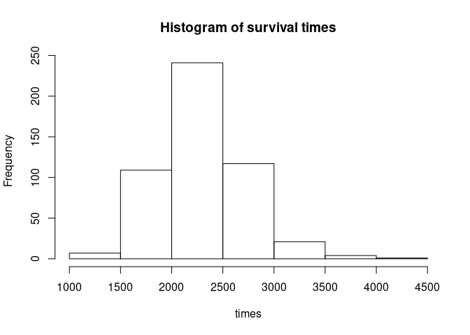
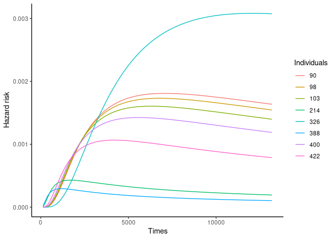

New hosting/Installation
https://github.com/mathildesautreuil/survMS
Install from CRAN:
install.packages("survMS")Or install the development version from Github:
install.packages("devtools")
devtools::install_github("mathildesautreuil/survMS")And load the library:
1 Introduction
survMS is an R package that generates survival data from different survival models with varying levels of complexity. Three survival models are implemented in the package to simulate survival data: a Cox model, an Accelerated Failure Time (AFT) model, and an Accelerated Hazard (AH) model. These models have their specificities. Indeed, a Cox model is a proportional risk model, not an AFT and an AH model. A proportional risk model means that the ratio of the risks between two individuals with different explanatory variables does not depend on the time. In an AFT model, the explanatory variables have an accelerating or decelerating effect on individuals’ survival. In both models, a Cox model and an AFT model, the survival function’s curves never intersect. When one is interested in more complex data with intersecting survival curves, for example, to make it more difficult for methods to predict survival, two approaches are implemented in the package. The first approach consists of modifying an AFT model to have intersecting survival curves. The second approach concerns using of an AH model (for Accelerated Hazards) to generate the survival data. an AH model is more flexible than the two models mentioned above. In an AH model, the variables accelerate or decelerate the hazard risk. The survival curves of an AH model can therefore cross each other. The generation of survival times carried out from the different models mentioned above. The baseline risk function of the models is assumed to be known and follows a particular probability distribution. For these different models, we use parametric distribution of the baseline risk for the generation of survival time.
Note that we stayed in a linear dependency framework without interaction. We will adapt the package in a second step to be in a nonlinear framework to simulate interactions. The package’s implementation is easily adapted to the nonlinear framework with interactions by replacing the explanatory variables’ linear part with a nonlinear function of the explanatory variables. All the functions in the package are coded to introduce this nonlinear function of the explanatory variables easily.
For details on methodology, see Vignette.
2 Simulation from a Cox model
The package survMS can simulate data from a Cox model. We have chosen to carry out this simulation to generate survival data that respects the proportional risk hypothesis. For more details, see Vignette. Survival times can follow different distributions: Weibull, log-normal, exponential (in progress) and Gompertz (in progress).
2.1 Simulation from a Cox model with baseline hazard following Weibull distribution
To simulate survival data checking the proportional risk hypothesis, we use a Cox model with survival times following a Weibull distribution.
res_paramW = get_param_weib(med = 1062, mu = 1134)
# c(res_paramW$a, res_paramW$lambda)
listCoxWSim_n500_p1000 <- modelSim(model = "cox", matDistr = "unif", matParam = c(-1,1), n = 500,
p = 1000, pnonull = 20, betaDistr = 1, hazDistr = "weibull",
hazParams = c(3, 4), seed = 1, d = 0)
#> Warning in modelSim(model = "cox", matDistr = "unif", matParam = c(-1, 1), :
#> Options "non-linearity with interactions" not available
#> [1] 3 4
hist(listCoxWSim_n500_p1000)2.2 Simulation from a Cox model with baseline hazard following log-normal distribution
To simulate survival data checking the proportional risk hypothesis, we use a Cox model with survival times following a log-normal distribution.
res_paramLN = get_param_ln(var = 170000, mu = 2320)
listCoxSim_n500_p1000 <- modelSim(model = "cox", matDistr = "unif", matParam = c(-1,1), n = 500,
p = 1000, pnonull = 20, betaDistr = 1, hazDistr = "log-normal",
hazParams = c(res_paramLN$a, res_paramLN$lambda), seed = 1, d = 0)
#> Warning in modelSim(model = "cox", matDistr = "unif", matParam = c(-1, 1), :
#> Options "non-linearity with interactions" not available
hist(listCoxSim_n500_p1000)
3 Simulation from an AFT model
From survMS package, we can simulate the data from an AFT model. We have chosen to carry out this simulation to generate survival data that does not respect the proportional risk hypothesis. For more details, see Vignette. Survival times can follow different distributions: Weibull, log-normal, exponential (in progress) and Gompertz (in progress).
3.1 Simulation from an AFT model with baseline hazard following Weibull distribution
To simulate survival data not checking the proportional risk hypothesis, we use an AFT model with survival times following a weibull distribution.
res_paramW = get_param_weib(med = 1062, mu = 1134)
# c(res_paramW$a, res_paramW$lambda)
listAFTWSim_n500_p1000 <- modelSim(model = "AFT", matDistr = "unif", matParam = c(-1,1), n = 500,
p = 1000, pnonull = 20, betaDistr = 1, hazDistr = "weibull",
hazParams = c(3, 2), seed = 1, d = 0)
#> Warning in modelSim(model = "AFT", matDistr = "unif", matParam = c(-1, 1), :
#> Options "non-linearity with interactions" not available
hist(listAFTWSim_n500_p1000)
3.2 Simulation from an AFT model with baseline hazard following log-normal distribution
To simulate survival data not checking the proportional risk hypothesis, we use an AFT model with survival times following a log-normal distribution.
res_paramLN = get_param_ln(var = 170000, mu = 2325)
listAFTLNSim_n500_p1000 <- modelSim(model = "AFT", matDistr = "unif", matParam = c(-1,1), n = 500,
p = 10, pnonull = 10, betaDistr = 1, hazDistr = "log-normal",
hazParams = c(res_paramLN$a*3, res_paramLN$lambda), seed = 1, d = 0)
#> Warning in modelSim(model = "AFT", matDistr = "unif", matParam = c(-1, 1), :
#> Options "non-linearity with interactions" not available
hist(listAFTLNSim_n500_p1000)
3.3 Simulation from a shifted AFT model
To obtain survival data from a model that does not respect the proportional risk hypothesis and that their survival curves can not cross, we have modified the AFT model by adding a term betaDistr in the model. For more details, see Vignette. Survival times can follow different distributions: Weibull, log-normal, exponential (in progress) and Gompertz (in progress).
res_paramLN = get_param_ln(var = 170000, mu = 2325)
listAFTsSim_n500_p1000 <- modelSim(model = "AFTshift", matDistr = "unif", matParam = c(-1,1), n = 500,
p = 10, pnonull = 10, betaDistr = "unif", hazDistr = "log-normal",
hazParams = c(0.3, res_paramLN$lambda), seed = 1, d = 0)
#> Warning in modelSim(model = "AFTshift", matDistr = "unif", matParam = c(-1, :
#> Options "non-linearity with interactions" not available
#> Warning in log(mat_grille_ti * (1/as.vector(eta_i)) - matrix(phi2, nrow(Z), :
#> production de NaN
hist(listAFTsSim_n500_p1000)
4 Simulation from an AH model
From survMS package, we can also simulated survival data from another model, an AH model. We have chosen to carry out this simulation to generate survival data that does not respect the proportional risk hypothesis and survival curves can cross. For more details, see Vignette.
4.1 Simulation from an AH model with baseline hazard following Weibull distribution
res_paramW = get_param_weib(med = 1062, mu = 1134)
listAHwSim_n500_p1000 <- modelSim(model = "AH", matDistr = "unif", matParam = c(-1,1), n = 500,
p = 100, pnonull = 20, betaDistr = 1, hazDistr = "weibull",
hazParams = c(res_paramW$a, res_paramW$lambda),
Phi = 0, seed = 1, d = 0)
#> Warning in modelSim(model = "AH", matDistr = "unif", matParam = c(-1, 1), :
#> Options "non-linearity with interactions" not available
hist(listAHwSim_n500_p1000)4.2 Simulation from the an AH model with baseline hazard following log-normal distribution
res_paramLN = get_param_ln(var = 170000, mu = 2325)
listAHSim_n500_p1000 <- modelSim(model = "AH", matDistr = "unif", matParam = c(-1,1), n = 500,
p = 100, pnonull = 100, betaDistr = 1.5, hazDistr = "log-normal",
hazParams = c(res_paramLN$a*4, res_paramLN$lambda), Phi = 0,
seed = 1, d = 0)
#> Warning in modelSim(model = "AH", matDistr = "unif", matParam = c(-1, 1), :
#> Options "non-linearity with interactions" not available
# summary(listAHSim_n500_p1000)
# print(listAHSim_n500_p1000)
hist(listAHSim_n500_p1000)
5 Utils functions
5.1 Get parameters of survival time distribution
# Weibull distribution
res_paramW = get_param_weib(med = 1062, mu = 1134)
res_paramW
#> $a
#> [1] 1.969765
#>
#> $lambda
#> [1] 7.586963e-07
# Log-normale distribution
res_paramLN = get_param_ln(var = 600000, mu = 1134)
res_paramLN
#> $a
#> [1] 0.6188154
#>
#> $lambda
#> [1] 6.842045.2 Plotting survival curves
5.2.1 Cox/Weibull model
set.seed(1234)
ind = sample(x = 1:500, 8)
## Cox/Weibull model
# df_p1000_n500[1:6,1:10]
plot(listCoxWSim_n500_p1000, ind = ind)
5.2.2 AFT/Log-normal model
## AFT/Weibull model
# df_p1000_n500[1:6,1:10]
plot(listAFTLNSim_n500_p1000, ind = ind)5.2.3 Shifted AFT/Log-normal model
## Shifted AFT/LN model
# df_p1000_n500[1:6,1:10]
plot(listAFTsSim_n500_p1000, ind = ind)

5.3 Plotting hazard curves
5.3.1 Cox/Weibull model
## Cox/Weibull model
# df_p1000_n500[1:6,1:10]
plot(listCoxWSim_n500_p1000, ind = ind, type = "hazard")5.3.2 AFT/Weibull model
## AFT/Weibull model
# df_p1000_n500[1:6,1:10]
plot(listAFTWSim_n500_p1000, ind = ind, type = "hazard")5.3.3 AFT/Log-normal model
## AFT/LN model
# df_p1000_n500[1:6,1:10]
plot(listAFTLNSim_n500_p1000, ind = ind, type = "hazard")
5.3.4 Shifted AFT/Log-normal model
## Shifted AFT/LN model
# df_p1000_n500[1:6,1:10]
plot(listAFTsSim_n500_p1000, ind = ind, type = "hazard")
5.3.5 AH/LN model
## Cox/Weibull model
# df_p1000_n500[1:6,1:10]
plot(listAHSim_n500_p1000, ind = ind, type = "hazard")
6 Examples
Please also see the package vignette for more detailed examples and a description of the methodology underpinning the survMS package.